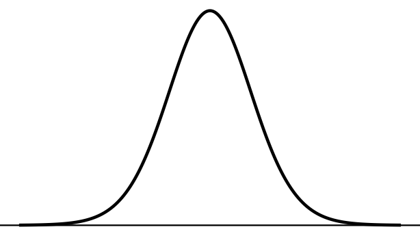
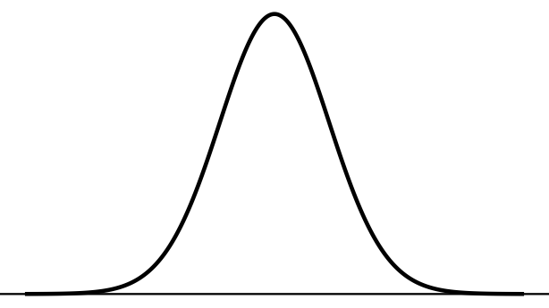
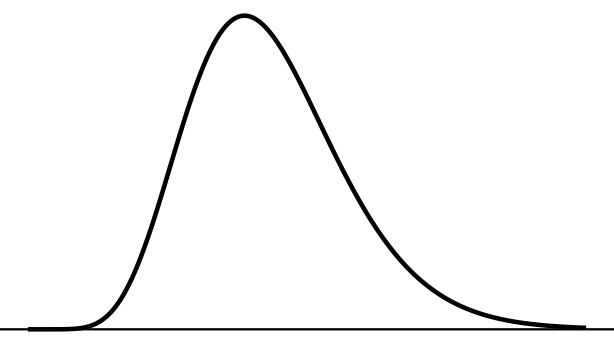
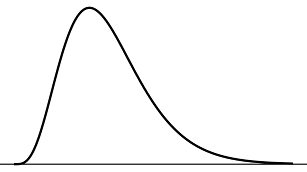
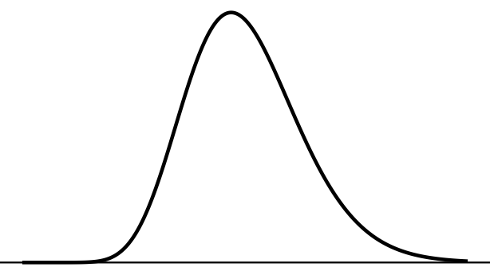

Chapter 2 | 208272 Elementary Statistics for Social Sciences II
Asst. Prof. Dr. Parichart Pattarapanitchai
Mean, \(\sigma\) Known
Learning Objectives
Recognize when the \(z\) method for one mean applies.
Construct and interpret a confidence interval for \(\mu\) when \(\sigma\) is known.
Carry out a \(z\) test for \(\mu\) in five steps and write the conclusion.
Concept
Sometimes the population standard deviation \(\sigma\) is known from a large source, such as a census or many years of administrative records, while the mean may have changed. For example, the spread of daily wages in an industry is fairly stable, but the mean wage changes with prices and minimum-wage policy.
When \(\sigma\) is known, Chapter 1 tells us that \[
z = \frac{\bar{x} - \mu}{\sigma/\sqrt{n}}
\] follows the standard normal distribution, provided the population is normal or \(n \ge 30\). Both the confidence interval and the test use this result.
Formulas and Conditions
Conditions:\(\sigma\) is known; a random sample; the population is normal or \(n \ge 30\).
\((1-\alpha)100\%\) confidence interval for \(\mu\)\[
\bar{x} \pm z_{1-\alpha/2}\,\frac{\sigma}{\sqrt{n}}
\] For a 95% CI, \(z_{0.975} = 1.960\); for a 99% CI, \(z_{0.995} = 2.576\).
Test statistic for \(H_0: \mu = \mu_0\)\[
z_{\text{cal}} = \frac{\bar{x} - \mu_0}{\sigma/\sqrt{n}}
\]
\(H_1\)
Critical region
\(\mu \ne \mu_0\)
\(z_{\text{cal}} < z_{\alpha/2}\) or \(z_{\text{cal}} > z_{1-\alpha/2}\)
\(\mu < \mu_0\)
\(z_{\text{cal}} < z_{\alpha}\)
\(\mu > \mu_0\)
\(z_{\text{cal}} > z_{1-\alpha}\)
Worked Example
Worked Example 2.1.1. From many years of Labour Force Survey records, the standard deviation of the daily wage of construction workers in Chiang Mai is \(\sigma\) = 60 baht. A labour union surveys 36 workers and finds a mean daily wage of \(\bar{x}\) = 358.4 baht (hypothetical figures). The Ministry of Labour reports a mean of 380 baht; the union believes the true mean is lower.
Construct a 95% confidence interval for the mean daily wage.
At \(\alpha\) = 0.05, test whether the mean daily wage is less than 380 baht.
Step 4: Critical value and critical region. Left-sided test, area 0.05 to the left: \(z_{0.05} = -z_{0.95} = -1.645\). Critical region: \(z_{\text{cal}} < -1.645\).
Figure 1: Critical region for Worked Example 2.1.1
Step 5: Decision and interpretation.\(z_{\text{cal}} = -2.160\) falls in the critical region (\(-2.160 < -1.645\)), so we reject \(H_0\). That is, the mean daily wage of construction workers in Chiang Mai is less than 380 baht at the 0.05 level of significance.
Your Turn
Your Turn 2.1.1
The standard deviation of the price of a 5-kg bag of jasmine rice across shops is known to be \(\sigma\) = 12 baht. A price-monitoring agency checks 49 shops and finds a mean price of \(\bar{x}\) = 214.6 baht (hypothetical figures).
Construct a 95% confidence interval for the mean price.
At \(\alpha\) = 0.05, test whether the mean price is different from 210 baht.
Solution: Your Turn 2.1.1
(a)\(\sigma/\sqrt{n} = 12/\sqrt{49} = 1.7143\); \(214.6 \pm 1.960(1.7143) = 214.6 \pm 3.36\). 95% CI: (211.24, 217.96). We are 95% confident that the mean price of a 5-kg bag of jasmine rice is between 211.24 and 217.96 baht.
Step 5.\(z_{\text{cal}} = 2.683\) falls in the critical region (\(2.683 > 1.960\)), so we reject \(H_0\). That is, the mean price of a 5-kg bag of jasmine rice is different from 210 baht at the 0.05 level of significance; since \(\bar{x}\) = 214.6, the mean price is higher than 210 baht.
Formula Summary
Formula
Conditions
\(\sigma\) known; population normal or \(n \ge 30\)
2.1.1 Utility records show that the standard deviation of the monthly electricity bill of households in a city is 320 baht. A sample of 64 households has a mean bill of 1,240 baht (hypothetical figures). Construct a 99% confidence interval for the mean monthly bill.
Solution: Exercise 2.1.1
\(\sigma/\sqrt{n} = 320/\sqrt{64} = 40\); \(z_{0.995} = 2.576\). \(1240 \pm 2.576(40) = 1240 \pm 103.04\). 99% CI: (1,136.96, 1,343.04). We are 99% confident that the mean monthly electricity bill is between 1,136.96 and 1,343.04 baht.
2.1.2 A company claims that the mean monthly sales per salesperson are more than 150 thousand baht. The standard deviation is known to be 24 thousand baht. A sample of 40 salespeople has a mean of 156.2 thousand baht (hypothetical figures). Test the claim at \(\alpha\) = 0.01.
Step 5.\(z_{\text{cal}} = 1.634\) does not fall in the critical region (\(1.634 < 2.326\)), so we accept \(H_0\). That is, the mean monthly sales per salesperson are equal to 150 thousand baht at the 0.01 level of significance.
2.1.3 The standard deviation of savings deposits at a bank is known to be 12,000 baht. A sample of 100 accounts has a mean balance of 52,100 baht (hypothetical figures).
At \(\alpha\) = 0.05, test whether the mean balance is different from 50,000 baht.
Construct a 95% CI for the mean balance. Does it agree with (a)?
Solution: Exercise 2.1.3
(a)\(H_0: \mu = 5\times 10^{4} \quad H_1: \mu \ne 5\times 10^{4}\); \(\alpha\) = 0.05. \(\sigma/\sqrt{n} = 1200\); \(z_{\text{cal}} = (5.21\times 10^{4} - 5\times 10^{4})/1200 = 1.750\). Critical region: \(z_{\text{cal}} < -1.960\) or \(z_{\text{cal}} > 1.960\). \(z_{\text{cal}}\) does not fall in the critical region (\(-1.960 < 1.750 < 1.960\)), so we accept \(H_0\). That is, the mean balance is equal to 50,000 baht at the 0.05 level of significance.
(b)\(5.21\times 10^{4} \pm 1.960(1200)\): 95% CI (49,748.00, 54,452.00). The interval contains 50,000, which agrees with accepting \(H_0\) in (a).
Quiz: Session 2
Quiz code: ______
Mean, \(\sigma\) Unknown
Learning Objectives
Use the \(t\) distribution when \(\sigma\) is unknown and read the \(t\) table (Table 5).
Construct and interpret a confidence interval for \(\mu\) using \(s\).
Carry out a \(t\) test for \(\mu\) in five steps.
Use a confidence interval to reach the decision of a two-sided test.
Concept
In practice \(\sigma\) is almost never known. We replace it by the sample standard deviation \(s\). Because \(s\) itself varies from sample to sample, the statistic \[
t = \frac{\bar{x} - \mu}{s/\sqrt{n}}
\] is more spread out than \(z\). It follows a \(t\) distribution with \(\text{df} = n - 1\) degrees of freedom, provided the population is normal. For moderate or large \(n\) the method still works well when the population is not exactly normal.
Figure 2: The t distribution has heavier tails than z; with more df it gets closer to z
Formulas and Conditions
Conditions:\(\sigma\) unknown; a random sample; the population is approximately normal (less important when \(n\) is large).
\((1-\alpha)100\%\) confidence interval for \(\mu\)\[
\bar{x} \pm t_{1-\alpha/2,\,n-1}\,\frac{s}{\sqrt{n}}
\]
Test statistic for \(H_0: \mu = \mu_0\), with \(\text{df} = n-1\)\[
t_{\text{cal}} = \frac{\bar{x} - \mu_0}{s/\sqrt{n}}
\]
\(H_1\)
Critical region
\(\mu \ne \mu_0\)
\(t_{\text{cal}} < t_{\alpha/2,\,n-1}\) or \(t_{\text{cal}} > t_{1-\alpha/2,\,n-1}\)
\(\mu < \mu_0\)
\(t_{\text{cal}} < t_{\alpha,\,n-1}\)
\(\mu > \mu_0\)
\(t_{\text{cal}} > t_{1-\alpha,\,n-1}\)
Reading the \(t\) Table
Table 5 gives \(t\) values with a stated area to the left (columns) for each df (rows). Like \(z\), the \(t\) curve is symmetric, so the table lists only the right half: \(t_{0.05,\,\text{df}} = -t_{0.95,\,\text{df}}\).
Not every df is in the table
After df = 30 the table jumps to 40, 50, 60, 80, 100, 200, 500 and \(\infty\). All examples in this book use df that appear in the table.
Worked Example 2.2.1. Find (a) \(t_{0.975,\,24}\), (b) \(t_{0.05,\,15}\), (c) \(t_{0.995,\,40}\).
Shade the area to the left on each curve, then find (a) \(t_{0.975,\,15}\), (b) \(t_{0.01,\,20}\), (c) \(t_{0.95,\,60}\).
(a)

(b)

(c)
Figure 3: Shade the area to the left before reading Table 5
Solution: Your Turn 2.2.1
\(t_{0.975,\,15} = 2.131\)
\(t_{0.01,\,20} = -t_{0.99,\,20} = -2.528\)
\(t_{0.95,\,60} = 1.671\)
Worked Example
Worked Example 2.2.2. A food-delivery platform claims that its riders in Chiang Mai earn more than 600 baht per day on average. A researcher records the daily earnings (baht) of 25 randomly selected riders (hypothetical data):
Table 1: Daily earnings (baht) of 25 riders
724
756
588
693
777
657
631
777
549
444
511
614
754
593
698
541
616
793
670
698
555
668
510
740
567
The sample gives \(\bar{x}\) = 644.96 and \(s\) = 96.6499 baht.
Construct a 95% confidence interval for the mean daily earnings.
Step 4: Critical value and critical region. Right-sided test with df = 24: \(t_{0.95,\,24} = 1.711\). Critical region: \(t_{\text{cal}} > 1.711\).
Figure 4: Critical region for Worked Example 2.2.2
Step 5: Decision and interpretation.\(t_{\text{cal}} = 2.326\) falls in the critical region (\(2.326 > 1.711\)), so we reject \(H_0\). That is, the mean daily earnings of riders in Chiang Mai are more than 600 baht at the 0.05 level of significance.
Confidence Intervals and Two-Sided Tests
A \((1-\alpha)100\%\) CI and a two-sided test at level \(\alpha\) always agree:
if \(\mu_0\) is outside the CI, a two-sided test rejects \(H_0: \mu = \mu_0\);
if \(\mu_0\) is inside the CI, the test accepts \(H_0\).
For the riders, the 95% CI (605.06, 684.86) does not contain 600, so a two-sided test of \(H_0: \mu = 600\) at \(\alpha\) = 0.05 would reject \(H_0\). It does contain 620, so the same test of \(H_0: \mu = 620\) would accept \(H_0\).
Only for two-sided tests
This shortcut matches a two-sided test with the same \(\alpha\) as the confidence level (\(\alpha\) = 0.05 with a 95% CI). For a one-sided test, carry out the five steps.
Your Turn
Your Turn 2.2.2
A property agent records the monthly rent of 16 one-bedroom condominium units near Nimmanhaemin Road, Chiang Mai. The sample mean is 9,420 baht and the standard deviation is 784 baht (hypothetical figures). Assume rents are normally distributed.
Construct a 95% confidence interval for the mean rent.
At \(\alpha\) = 0.05, test whether the mean rent is different from 9,000 baht.
Does the CI in (a) agree with your decision in (b)?
Solution: Your Turn 2.2.2
(a) df = 15, \(t_{0.975,\,15} = 2.131\); \(s/\sqrt{n} = 784/\sqrt{16} = 196\); \(9420 \pm 2.131(196) = 9420 \pm 417.676\). 95% CI: (9,002.32, 9,837.68). We are 95% confident that the mean monthly rent is between 9,002.32 and 9,837.68 baht.
Step 5.\(t_{\text{cal}} = 2.143\) falls in the critical region (\(2.143 > 2.131\)), so we reject \(H_0\). That is, the mean monthly rent is different from 9,000 baht at the 0.05 level of significance; since \(\bar{x}\) = 9,420, the mean rent is higher than 9,000 baht.
(c) Yes. The 95% CI does not contain 9,000, so the two-sided test at \(\alpha\) = 0.05 rejects \(H_0\).
Formula Summary
Formula
Conditions
\(\sigma\) unknown; population approximately normal
two-sided test at \(\alpha\) rejects \(H_0\)\(\iff\)\(\mu_0\) is outside the \((1-\alpha)100\%\) CI
Exercises
2.2.1 A survey of 20 households in a district finds a mean household debt of 184,500 baht with a standard deviation of 41,200 baht (hypothetical figures). At \(\alpha\) = 0.05, test whether the mean household debt is more than 170,000 baht.
Step 5.\(t_{\text{cal}} = 1.574\) does not fall in the critical region (\(1.574 < 1.729\)), so we accept \(H_0\). That is, the mean household debt in the district is equal to 170,000 baht at the 0.05 level of significance.
2.2.2 A sample of 30 gig workers reports a mean of 47.3 working hours per week with a standard deviation of 8.4 hours (hypothetical figures). Construct a 99% confidence interval for the mean weekly working hours.
Solution: Exercise 2.2.2
df = 29, \(t_{0.995,\,29} = 2.756\); \(s/\sqrt{n} = 8.4/\sqrt{30} = 1.5336\); \(47.3 \pm 2.756(1.5336) = 47.3 \pm 4.2266\). 99% CI: (43.07, 51.53). We are 99% confident that the mean weekly working hours of gig workers are between 43.07 and 51.53 hours.
2.2.3 A 95% confidence interval for the mean monthly interest rate charged by informal lenders is (12.4%, 15.8%) (hypothetical figures). Without further calculation, what is the decision of a two-sided test at \(\alpha\) = 0.05 for (a) \(H_0: \mu = 16\), (b) \(H_0: \mu = 15\)?
Check the conditions for the normal approximation to \(\hat{p}\).
Construct and interpret a confidence interval for a population proportion \(p\).
Carry out a \(z\) test for \(p\) in five steps.
Explain why the CI uses \(\hat{p}\) in the standard error but the test uses \(p_0\).
Concept
Many economic questions are about proportions: the share of households in debt, the labour force participation rate, the share of firms that raised prices, or the share of people who used a stimulus measure. Each person or firm either has the characteristic (“success”) or not.
With \(x\) successes in a sample of \(n\), the sample proportion is \(\hat{p} = x/n\). From Chapter 1, \(\hat{p}\) is approximately normal with mean \(p\) and standard error \(\sqrt{p(1-p)/n}\) when the sample is large enough.
Which proportion goes in the standard error?
The standard error contains the unknown \(p\), so we must put in a value:
Confidence interval: we do not assume any value of \(p\), so we use our best estimate \(\hat{p}\).
Hypothesis test: we assume \(H_0\) is true, so we use \(p_0\).
Test statistic for \(H_0: p = p_0\)\[
z_{\text{cal}} = \frac{\hat{p} - p_0}{\sqrt{p_0(1-p_0)/n}}
\qquad \text{condition: } np_0 \ge 5 \text{ and } n(1-p_0) \ge 5
\]
The critical regions are the same as for the \(z\) test of a mean.
Worked Example
Worked Example 2.3.1. The government ran a co-payment scheme in which it paid part of the price of goods bought at small shops. An economist claims that more than 30% of households in Chiang Mai used the scheme. In a random sample of 400 households, 148 used it (hypothetical figures).
Construct a 95% confidence interval for the proportion of households that used the scheme.
Step 4: Critical value and critical region.\(z_{0.95} = 1.645\). Critical region: \(z_{\text{cal}} > 1.645\).
Step 5: Decision and interpretation.\(z_{\text{cal}} = 3.057\) falls in the critical region (\(3.057 > 1.645\)), so we reject \(H_0\). That is, the proportion of households in Chiang Mai that used the scheme is more than 0.30 at the 0.05 level of significance.
Your Turn
Your Turn 2.3.1
A university reports that 70% of its economics graduates find a job within six months. A survey of 250 recent graduates finds that 160 found a job within six months (hypothetical figures).
Construct a 95% confidence interval for the proportion of graduates who find a job within six months.
At \(\alpha\) = 0.05, test whether the proportion is different from 0.70.
Solution: Your Turn 2.3.1
\(\hat{p} = 160/250 = 0.64\)
(a)\(\sqrt{0.64(0.36)/250} = 0.0304\); \(0.64 \pm 1.960(0.0304) = 0.64 \pm 0.0596\). 95% CI: (0.5804, 0.6996). We are 95% confident that the proportion of graduates who find a job within six months is between 0.5804 and 0.6996.
Step 5.\(z_{\text{cal}} = -2.069\) falls in the critical region (\(-2.069 < -1.960\)), so we reject \(H_0\). That is, the proportion of graduates who find a job within six months is different from 0.70 at the 0.05 level of significance; since \(\hat{p}\) = 0.64, the proportion is lower than 0.70.
2.3.1 In a survey of 500 small businesses, 95 had borrowed from an informal lender in the past year (hypothetical figures). Construct a 99% confidence interval for the proportion of small businesses that borrowed from an informal lender.
Solution: Exercise 2.3.1
\(\hat{p} = 0.19\); \(\sqrt{0.19(0.81)/500} = 0.0175\); \(z_{0.995} = 2.576\); \(0.19 \pm 2.576(0.0175) = 0.19 \pm 0.0451\). 99% CI: (0.1449, 0.2351). We are 99% confident that the proportion of small businesses that borrowed from an informal lender is between 0.1449 and 0.2351.
2.3.2 A bank believes that less than 25% of its credit-card holders pay only the minimum amount each month. In a sample of 300 card holders, 66 paid only the minimum (hypothetical figures). Test the bank’s belief at \(\alpha\) = 0.05.
Step 5.\(z_{\text{cal}} = -1.200\) does not fall in the critical region (\(-1.200 > -1.645\)), so we accept \(H_0\). That is, the proportion of card holders who pay only the minimum is equal to 0.25 at the 0.05 level of significance.
2.3.3 A researcher wants to test \(H_0: p = 0.05\) for the unemployment rate in a district using a sample of 60 people. Is the \(z\) test appropriate? Explain.
Solution: Exercise 2.3.3
No. \(np_0 = 60(0.05) = 3 < 5\), so the normal approximation is not reliable. A larger sample (at least 100 people) is needed.
Quiz: Session 4
Quiz code: ______
Variance
Learning Objectives
Explain why the variance matters in economics (risk, volatility, price stability).
Read the chi-square table (Table 6).
Construct and interpret a confidence interval for \(\sigma^2\) and \(\sigma\).
Carry out a chi-square test for \(\sigma^2\) in five steps.
Concept
The mean tells us the typical value; the variance tells us how much values vary. In finance the standard deviation of returns is the most common measure of risk (volatility). A central bank cares about the stability of prices, and a firm cares about the stability of its sales.
To make inferences about \(\sigma^2\) we use the sample variance \(s^2\). If the population is normal, \[
\chi^2 = \frac{(n-1)s^2}{\sigma^2}
\] follows a chi-square distribution with \(n-1\) degrees of freedom. The chi-square distribution takes only positive values and is skewed to the right.
Figure 5: Chi-square distributions are skewed to the right; the skew decreases as df increases
The population must be normal
The chi-square methods for a variance are sensitive to non-normality, even for large samples. Use them only when the data are approximately normal.
Reading the Chi-Square Table
Table 6 gives \(\chi^2\) values with a stated area to the left, for df = 1 to 100. The curve is not symmetric, so for a two-sided test or a CI we read two different values from the table; we cannot use a minus sign.
Worked Example 2.4.1. For df = 23, find \(\chi^2_{0.025,\,23}\), \(\chi^2_{0.975,\,23}\) and \(\chi^2_{0.95,\,23}\).
Figure 6: Areas 0.025 in each tail of the chi-square distribution with df = 23
Your Turn 2.4.1
Shade the area to the left on each curve, then find (a) \(\chi^2_{0.05,\,19}\), (b) \(\chi^2_{0.995,\,10}\), (c) \(\chi^2_{0.025,\,30}\).

(a)

(b)

(c)
Figure 7: Shade the area to the left before reading Table 6
Solution: Your Turn 2.4.1
\(\chi^2_{0.05,\,19} = 10.1\)
\(\chi^2_{0.995,\,10} = 25.2\)
\(\chi^2_{0.025,\,30} = 16.8\)
Formulas and Conditions
Condition: a random sample from a normal population.
\((1-\alpha)100\%\) confidence interval for \(\sigma^2\)\[
\left(\frac{(n-1)s^2}{\chi^2_{1-\alpha/2,\,n-1}},\;
\frac{(n-1)s^2}{\chi^2_{\alpha/2,\,n-1}}\right)
\] Take the square root of both limits to get a CI for \(\sigma\). The larger chi-square value gives the lower limit. The interval is not symmetric about \(s^2\).
Test statistic for \(H_0: \sigma^2 = \sigma_0^2\), with df \(= n-1\)\[
\chi^2_{\text{cal}} = \frac{(n-1)s^2}{\sigma_0^2}
\]
\(H_1\)
Critical region
\(\sigma^2 \ne \sigma_0^2\)
\(\chi^2_{\text{cal}} < \chi^2_{\alpha/2,\,n-1}\) or \(\chi^2_{\text{cal}} > \chi^2_{1-\alpha/2,\,n-1}\)
\(\sigma^2 < \sigma_0^2\)
\(\chi^2_{\text{cal}} < \chi^2_{\alpha,\,n-1}\)
\(\sigma^2 > \sigma_0^2\)
\(\chi^2_{\text{cal}} > \chi^2_{1-\alpha,\,n-1}\)
A claim about \(\sigma\) is tested as the same claim about \(\sigma^2\): for example \(\sigma > 2\) is \(\sigma^2 > 4\).
Worked Example
Worked Example 2.4.2. A fund manager states that the standard deviation of the fund’s monthly return is 2%. An investor suspects the fund is riskier. Over the last 24 months the standard deviation of the monthly return was \(s\) = 2.6% (hypothetical figures). Assume monthly returns are normally distributed.
Construct a 95% confidence interval for the variance and the standard deviation of the monthly return.
At \(\alpha\) = 0.05, test whether the standard deviation is more than 2%.
We are 95% confident that the standard deviation of the fund’s monthly return is between 2.0201% and 3.6454%. Note that \(s\) = 2.6 is not in the middle of the interval.
Step 4: Critical value and critical region. df = 23: \(\chi^2_{0.95,\,23} = 35.2\). Critical region: \(\chi^2_{\text{cal}} > 35.2\).
Step 5: Decision and interpretation.\(\chi^2_{\text{cal}} = 38.870\) falls in the critical region (\(38.870 > 35.2\)), so we reject \(H_0\). That is, the standard deviation of the fund’s monthly return is more than 2% at the 0.05 level of significance.
Your Turn
Your Turn 2.4.2
A price-stabilization policy aims to keep the standard deviation of the weekly retail price of pork at 3 baht per kg. Over 20 weeks the standard deviation was \(s\) = 4.5 baht (hypothetical figures). Assume prices are normally distributed.
Construct a 95% confidence interval for \(\sigma\).
At \(\alpha\) = 0.05, test whether the standard deviation is different from 3 baht.
(a) CI for \(\sigma^2\): \((384.75/32.9,\ 384.75/8.91) = (11.6945,\ 43.1818)\). CI for \(\sigma\): (3.4197, 6.5713). We are 95% confident that the standard deviation of the weekly pork price is between 3.4197 and 6.5713 baht.
Step 5.\(\chi^2_{\text{cal}} = 42.750\) falls in the critical region (\(42.750 > 32.9\)), so we reject \(H_0\). That is, the standard deviation of the weekly pork price is different from 3 baht at the 0.05 level of significance; since \(s\) = 4.5, it is higher than 3 baht, so the policy target was not met.
Formula Summary
Formula
Condition
population normal
\((1-\alpha)100\%\) CI for \(\sigma^2\)
\(\left(\dfrac{(n-1)s^2}{\chi^2_{1-\alpha/2,\,n-1}},\ \dfrac{(n-1)s^2}{\chi^2_{\alpha/2,\,n-1}}\right)\); square root for \(\sigma\)
2.4.1 Before a new ordering system, the standard deviation of a shop’s daily sales was 10 units. After the system was introduced, 16 days of sales had a standard deviation of 7.2 units (hypothetical figures). At \(\alpha\) = 0.05, test whether the standard deviation is now less than 10 units. Assume normality.
Step 5.\(\chi^2_{\text{cal}} = 7.776\) does not fall in the critical region (\(7.776 > 7.26\)), so we accept \(H_0\). That is, the standard deviation of daily sales is equal to 10 units at the 0.05 level of significance.
2.4.2 The daily change in an exchange rate over 25 trading days has a standard deviation of 0.35 baht (hypothetical figures). Assuming normality, construct a 90% confidence interval for the standard deviation of the daily change.
Solution: Exercise 2.4.2
\((n-1)s^2 = 24(0.1225) = 2.94\); \(\chi^2_{0.05,\,24} = 13.8\), \(\chi^2_{0.95,\,24} = 36.4\). CI for \(\sigma^2\): (0.0808, 0.2130); CI for \(\sigma\): (0.2843, 0.4615). We are 90% confident that the standard deviation of the daily change is between 0.2843 and 0.4615 baht.
2.4.3 Explain why the confidence interval for \(\sigma^2\) is not of the form “estimate \(\pm\) margin of error”.
Solution: Exercise 2.4.3
The chi-square distribution is skewed to the right, so the two critical values are not the same distance from the centre. Dividing \((n-1)s^2\) by them gives limits that are not equally far from \(s^2\).